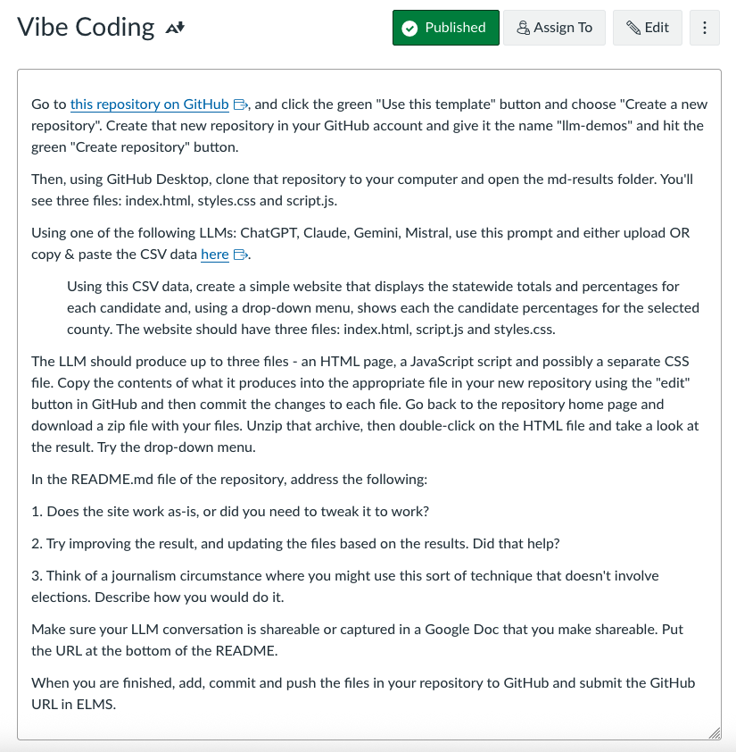

The first thing you should know about me is that I’ve been programming computers for at least two decades. The second (and more important) thing you should know is that I’m not very good at it.
I like to tell people that my programming skills are good enough for journalism, which is to say that I’ve never received any interest from companies that do actual software development, the kind that powers consequential systems and machines. No one should hire me to write code for a power plant or any other system that should not fail. My code is not art, either; the best that can be said about it is that it is functional. I’d be pleased if someone were to say that something I’ve written is like a Toyota Corolla: not much to look at, but it runs.
That’s because many of the things that I do when writing software can be considered one-offs. A lot of the time that means I need to scrape some website or, as Jeremy Bowers once memorably put it, “turn strings into other strings.” If other people find them useful, great, but that’s not the main goal.
For those kinds of efforts, vibe coding comes in handy. There are a bunch of ways you can interpret the term, but I like the one Simon Willison mentions in that post: “building software with an LLM without reviewing the code it writes.” Now, I do review some of that code - and always the output of that code and tweak accordingly. But I’m mostly not looking at every line to make sure it’s how I would write it. Web scraping is a great use case for this kind of vibe coding, as is some Tidyverse code to turn some government spreadsheet into a more manageable CSV file. But there’s another case where I think vibe coding makes a ton of sense: where code meets domain expertise.
More than 10 years ago, Geoff Hing and I (mostly Geoff) wrote a Python library called Clarify as part of the OpenElections project I co-founded. It does one thing: parse the XML produced by a popular election results software vendor into Python objects so that we could produce standardized CSV files of official precinct-level election results. Over several hours, and with Geoff doing most of the work, we cobbled together a useful piece of software. And then Geoff went on to bigger and better things, including keynoting PyCon this year!
Thankfully for me, that election software vendor didn’t change things too much over the next few years, and I was able to maintain the library without too much effort. But then they made some changes that broke Clarify in a few ways, and Python 2 basically went away. While I managed to come up with patches, it was never what I’d call a real programming effort. The tests that Geoff had built failed, and at one point I only had a working version on my laptop. Not great!
A number of states and counties still use that software vendor, though, so I needed Clarify. Recently I’ve been converting data from Texas, where more than a dozen counties use that vendor, and found myself with a duct-tape solution that involved a creaky Clarify library and a custom script that I put together over the past few years. Now, I know the XML format of the data. I know, from experience, what the actual results should look like if things work, and I’ve worked with U.S. election data long enough to confidently say that I’m kind of an expert on it. I know what Clarify should produce. And that’s where vibe coding becomes useful.
I fed the GitHub repository for Clarify into Claude 4 and started with a basic prompt:
Evaluate this code and make any suggested changes so that it runs well on Python 3
Claude responded:
I’ll analyze the Clarify codebase and identify the necessary changes to ensure it runs well on Python 3. Looking at the code, I can see it’s already mostly Python 3 compatible, but there are several issues that need to be addressed
Which, to be fair, is a pretty understated way of confirming what I had suspected about my own abilities. It made several suggestions, and I copied them and updated the files without looking too hard. Then I ran the tests, and it didn’t even get to the actual test methods.
So I put those back into Claude and basically did what it told me, and within a few minutes I had the tests working (and they were more useful in terms of output, too). Then Claude suggested improvements for the main portions of the library based on the test fixes, put the library on a more modern footing with a pyproject.toml file and fixed a bunch of Python 3 compatibility issues. I used it to parse a few of the Texas counties’ results - updating my custom script using the same process - and it worked great. So today I released version 0.7.0 of Clarify, which, with apologies to Geoff, is the best version of that library yet.
This only worked because I know what the output is supposed to look like. Being an expert in something means you should be able to describe it really well, to ask specific questions about it and to come up with specific ideas for its improvement. An LLM will have some “ideas” about how code should work, in general, but it won’t be able to know if the objects that code produces fit within the domain of, say, Texas elections. At some point that might happen, but elections are weird. They still require human knowledge.
The key here is that there’s almost no way I would have spent the time to update Clarify without using an LLM for assistance. I would have limped along with a mostly working but flawed library that probably wouldn’t really work for people curious about election data but not as familiar as I am.
So while I agree that LLM-assisted coding is much more than vibe coding, I think there’s real utility in applying the vibe coding approach to areas where you have real domain knowledge. There are risks in doing this, for sure, but my experience has been that my subject expertise can help steer me away from bad outcomes even if I don’t understand everything the code is doing at a fine-grained level.
The most obvious downside of this approach for me is that I don’t improve my software development skills all that much, mostly in small increments. If I spent more of my time releasing software that a lot of people depend on, that’s a real limitation. For a lot of what I do, not as much.
I’ve even begun incorporating this into my teaching: for an assignment in my AI and journalism class this semester, I posted the following assignment:

The CSV data I provided was of county-level results from the 2024 presidential election in Maryland. Most of the students had little or no experience with using LLMs in this way; they had taken a class in basic HTML & CSS. But all of them were able to create a simple one-page site with some interactivity like a drop-down menu for selecting individual counties. As one student put it:
I used gemini here and this worked great. Gemini automatically, without my asking, created a pretty strong data visualization showing a bar chart. The bar chart was automatically color coded and correct by the party’s assigned colors. The bar chart included the information for total votes and percent on each individual bar and the same for all the counties in the drop down menu. The page was, mostly, responsive and did pretty much all I wanted right off the bat. That was impressive.
And another, who definitely was new to coding, added:
I think that this is an incredibly beneficial thing for data journalists to master and journalists in general; although results should never be taken at face value, this made my understanding of the material more comprehensible.
All of them had to go back and fix things. Few of them were fully satisfied with the results, but in every case the LLM did the job and gave the student a new way of doing things. Imagine what they could do in an area that they have domain expertise in. That’s the idea I want to get across to them: they may never be expert programmers, but they can still leverage what they do know to make useful things.